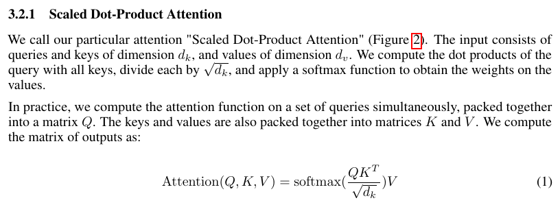
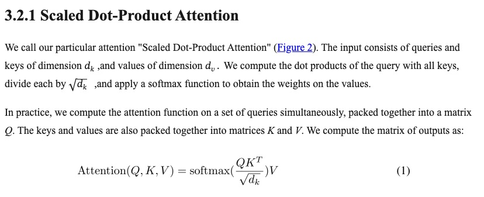

读论文，更顺手。
谷子学术是一款免费、开源的论文阅读工具。
统一排版，在原文旁提问，让读过的内容成为自己的积累。
支持 Apple Silicon，文献与阅读成果默认保存在本机。
公开 Attention 论文 · 真实桌面界面，译文人工整理。
不同的论文，
熟悉的阅读格式。
期刊和会议的版式各不相同。谷子学术将论文整理成连续、统一的阅读页面，让注意力回到内容本身。




复杂公式与图表，可随时对照原文核对。查看原 PDF 整页

录像无声，AI 回答为公开论文样例的预置演示。
读过的论文，
随时找得回来。
写作时想找回某个概念？通过 MCP 连接自己的 AI 工具，检索读过的论文，结合笔记与批注回顾，再带着出处回到原文。
让每次阅读留下的线索，都能帮上下一次思考。
在桌面版启用 MCP，选择允许访问的能力范围。连接时需保持谷子学术运行。
multi-head attention
Attention Is All You Need
第 5 页 · Multi-Head Attention
Multi-head attention allows the model to jointly attend to information from different representation subspaces at different positions.真实 MCP 调用节选，保留原文和出处。
查看调用记录
公开 Attention 论文 · 真实词条，释义人工整理。
你可能还想了解
在线体验和桌面版有什么区别？
在线体验使用公开 Attention 论文样例，笔记、批注和生词保存在当前浏览器。AI 回答与译文为预置示例。导入自己的 PDF、使用真实 AI、MCP 和插件开发等完整能力，需要安装桌面版。
需要自己配置 AI 吗？
需要。翻译、文章问答等功能使用你配置的服务地址、模型和 API Key。未配置 AI 时，仍可整理文献、阅读已转换内容、标注和记笔记。
论文和笔记会上传到服务器吗？
文献与阅读成果默认保存在本机。调用 AI 时，相关文本、上下文或主动加入的图片会发送到你配置的服务；启用远端解析时，PDF 会上传到指定服务器；在线元数据检索会发送论文标题、作者或标识符。MCP 可访问的能力由你设置。
每一篇 PDF 都能准确转换吗？
转换效果取决于原 PDF 和解析引擎，复杂公式、图表与多栏版面可能需要检查。你可以随时对照源文件核对，也可以按需要配置自己的远端解析服务。